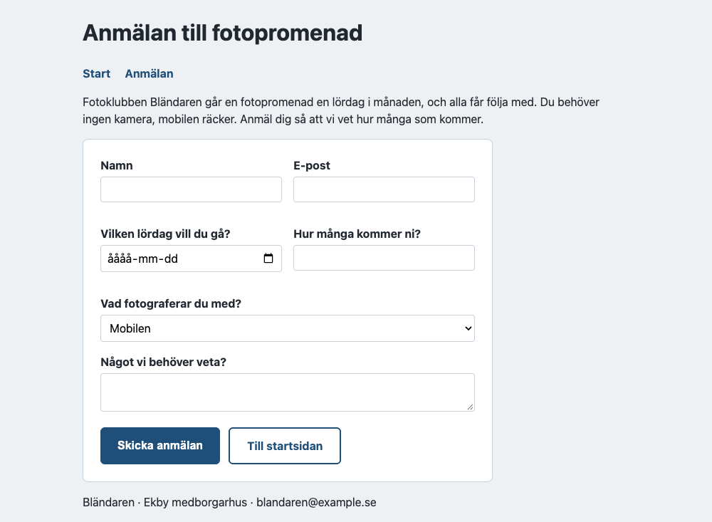
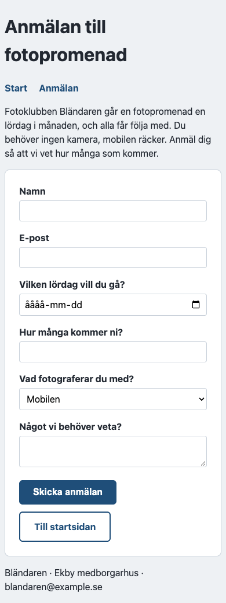

Övning R6 · Anmälan på mobil och dator
Läs så här: Välj en nivå per etapp: 🟢 Grön ger dig varje steg, 🔵 Blå säger vad som behövs men inte koden, 🔴 Röd ger bara kravet. Etapperna är desamma på alla nivåer, så du kan byta nivå mellan etapperna (och mitt i om du fastnar). Varje etapp slutar med Så vet du att etappen är klar: kontrollera den innan du går vidare. Längst ner finns Vanliga fel och, om du vill ha mer, ⚫ Svart.
Du bygger: Fotoklubben Bländarens anmälningssida, samma som du stylade i Övning T6, ska fungera lika bra i mobilen som på datorn. I mobilen står alla fält under varandra i en kolumn. På datorn får formuläret en maxbredd, alltså en största bredd det aldrig går över, och två par fält står bredvid varandra. Knapparna lär sig själva att gå ner på en ny rad när de inte får plats. Sist kontrollerar du CSS:en i CSS-validatorn.


Du behöver: mappen ovningar öppen i VS Code, Live Server och Chrome. Mappen r6-start, som ligger som zip-fil bredvid den här övningen i Learnpoint. Du ska kunna slå på enhetsläget i DevTools (Övning R5, etapp 1).
Etapp 1 · Hämta sidan och lägg till viewport-raden
Varför: viewport-raden ska finnas på varje sida, annars hjälper inget av det du gör för mobilen.
🟢 Grön · Steg för steg
- Hämta
r6-start.zipfrån Learnpoint och packa upp den. På Mac dubbelklickar du på zip-filen. På Windows högerklickar du på den och väljer Extrahera alla (Extract All). - Dra mappen
r6-startfrån Finder (Mac) eller Utforskaren (Windows) och släpp den på OVNINGAR i filpanelen i VS Code. I mappen liggerindex.html,signup.htmlochstyle.css. - Öppna
signup.htmlunderr6-starti VS Code. Klicka sist på rad 4, efter<meta charset="utf-8" />, tryck Enter och skriv:
<meta name="viewport" content="width=device-width, initial-scale=1" />- Spara. Gör samma sak i
index.html: samma rad, på samma ställe, rad 5. - Högerklicka på
signup.htmloch välj Open with Live Server. Öppna DevTools (högerklicka på sidan, Inspektera) och slå på enhetsläget med Toggle device toolbar (Cmd+Shift+M / Ctrl+Shift+M). Välj en mobil under Dimensions, till exempel iPhone 12 Pro. - Titta: i mobilen ser formuläret redan helt okej ut, eftersom fälten är lika breda som sidan. Slå av enhetsläget och gör Chrome-fönstret riktigt brett. Där blir fälten väldigt långa.
🔵 Blå · Med ledtrådar
Packa upp r6-start.zip från Learnpoint och lägg mappen i ovningar. Lägg viewport-raden i head på både signup.html och index.html, direkt efter meta charset. Öppna signup.html med Live Server och titta på formuläret både i enhetsläget och i ett brett fönster.
🔴 Röd · Bara kravet
Båda sidorna ska ha viewport-raden. Titta på formuläret i mobilbredd och i ett brett fönster.
Etapp 2 · Formuläret i en kolumn med maxbredd
Varför: ett fält som är en hel skärm brett är svårt att läsa av, så formuläret får en största bredd och blir ett eget vitt kort.
Fälten har redan width: 100%; från Övning T6: de blir lika breda som det de ligger i. Ger du form en max-width blir fälten aldrig bredare än så. I mobilen, där skärmen är smalare än maxbredden, märks ingen skillnad.
🟢 Grön · Steg för steg
- Öppna
style.cssunderr6-start. Klicka allra sist i filen, efter}som avslutar regelninput, select, textarea, och tryck Enter två gånger. - Skriv:
form {
max-width: 36rem;
padding: 8px 24px;
background-color: #ffffff;
border: 1px solid #c9d1da;
border-radius: 8px;
}När du skriver { lägger VS Code själv till }. Skriv bara det som saknas, så att det blir en } och inte två.
- Spara. I ett brett fönster är formuläret nu ett vitt kort, 36rem (576 pixlar) brett. Slå på enhetsläget: där fyller kortet hela bredden.
🔵 Blå · Med ledtrådar
Skriv en regel för form med max-width (till exempel 36rem). Ge den också padding, vit bakgrund, en border i palettens grå färg och border-radius, så att formuläret blir ett kort.
🔴 Röd · Bara kravet
Formuläret ska vara ett vitt kort med en maxbredd, så att fälten inte blir längre än ungefär 36rem på en bred skärm. I mobilen ska det fylla bredden.
Etapp 3 · Knappar som får plats
Varför: två knappar bredvid varandra får inte plats på en smal skärm, och då ska den andra gå ner på en ny rad i stället för att tryckas ihop.
Knapparna ligger i stycket <p class="buttons">. Knappen Till startsidan har två klasser, button och button-light, med mellanslag emellan: den får stilen från båda reglerna. flex-wrap: wrap; betyder att en flexbehållare får bryta raden, alltså låta de barn som inte får plats gå ner på en ny rad, ungefär som ord i en text.
🟢 Grön · Steg för steg
- Klicka allra sist i
style.css, efter}som avslutarform, tryck Enter två gånger och skriv:
.buttons {
display: flex;
gap: 12px;
}- Spara och titta i enhetsläget med en mobil vald. Knapparna står på samma rad men är hoptryckta, så att texten i dem delas på två rader.
- Klicka sist på raden
display: flex;i.buttons, tryck Enter och skrivflex-wrap: wrap;, så att regeln blir:
.buttons {
display: flex;
flex-wrap: wrap;
gap: 12px;
}- Spara. I mobilen står Till startsidan nu under Skicka anmälan, med lika mycket luft emellan som bredvid. I ett brett fönster står de på samma rad.
🔵 Blå · Med ledtrådar
Gör .buttons till en flexbehållare med ett gap. Titta i mobilbredd vad som händer med knapparna. Lägg sedan till flex-wrap med värdet wrap, så att en knapp som inte får plats går ner på en ny rad.
🔴 Röd · Bara kravet
Knapparna ska stå bredvid varandra när det finns plats och under varandra när det inte gör det, med samma avstånd åt båda hållen. Texten i en knapp får aldrig delas på två rader.
Etapp 4 · Två fält bredvid varandra från brytpunkten
Varför: på en bred skärm tar korta fält som namn och e-post onödigt mycket höjd när de står under varandra.
Precis som korten i Övning R4 behöver fälten en låda som bara finns för layoutens skull. Du lägger en div med klassen field-pair runt Namn och E-post, och en till runt datum och antal. I mobilen gör lådorna ingenting, fälten står kvar under varandra. Från brytpunkten 700 pixlar blir lådorna flexbehållare, så att fälten i dem står bredvid varandra.
🟢 Grön · Steg för steg
- Öppna
signup.html. Klicka sist på rad 23, efter<form>, tryck Enter och skriv<div class="field-pair">. Lägger VS Code till</div>direkt efter, ta bort det. - Klicka sist på rad 32 (den
</p>som avslutar E-post-fältet), tryck Enter och skriv</div>. - Klicka sist på rad 33 (det
</div>du nyss skrev), tryck Enter och skriv<div class="field-pair">. Ta bort</div>om VS Code lägger till det. - Klicka sist på rad 42 (den
</p>som avslutar fältet Hur många kommer ni?), tryck Enter och skriv</div>. - Spara. Prettier flyttar in fälten ett steg. Rad 23–43 ser nu ut så här:
<form>
<div class="field-pair">
<p>
<label for="name">Namn</label>
<input type="text" id="name" required />
</p>
<p>
<label for="email">E-post</label>
<input type="email" id="email" required />
</p>
</div>
<div class="field-pair">
<p>
<label for="date">Vilken lördag vill du gå?</label>
<input type="date" id="date" required />
</p>
<p>
<label for="count">Hur många kommer ni?</label>
<input type="number" id="count" />
</p>
</div>- Gå till
style.css. Klicka allra sist i filen, efter}som avslutar.buttons, tryck Enter två gånger och skriv:
@media (min-width: 700px) {
.field-pair {
display: flex;
gap: 16px;
}
.field-pair p {
flex: 1;
}
}- Spara. I ett brett fönster står Namn och E-post bredvid varandra, och likaså datum och antal. Slå på enhetsläget, välj Responsive under Dimensions och skriv
699och sedan700i rutan för bredd: vid 700 hoppar fälten upp bredvid varandra.
🔵 Blå · Med ledtrådar
I signup.html: lägg en div med klassen field-pair runt de två första fälten (varje fält ligger i ett eget p), och en till runt fälten för datum och antal. I style.css, allra sist: en media query med min-width: 700px. I den gör du .field-pair till en flexbehållare med ett gap, och ger .field-pair p flex: 1, så att fälten i paret blir lika breda.
🔴 Röd · Bara kravet
Från 700 pixlars bredd ska Namn och E-post stå bredvid varandra, och datum och antal bredvid varandra, lika breda. Under 700 ska alla fält stå under varandra. En enda brytpunkt, skriven med min-width.
Etapp 5 · CSS-validatorn
Varför: i projektet ska CSS:en validera, och en } för mycket eller ett felstavat värde syns inte alltid i Chrome.
CSS-validatorn (jigsaw.w3.org/css-validator) gör för CSS det som HTML-validatorn gör för HTML: den läser filen och säger vad som bryter mot reglerna.
🟢 Grön · Steg för steg
- Spara
style.cssi VS Code. - Öppna en ny flik i Chrome och gå till
jigsaw.w3.org/css-validator. - Klicka på fliken By file upload. Klicka på Choose File (Välj fil), gå till
ovningar, sedanr6-start, och väljstyle.css. Klicka Check. - Överst ska det stå Congratulations! No Error Found. Sidan kan också vara på svenska, beroende på hur din Chrome är inställd.
- Står det fel: läs radnumret och meddelandet, rätta i VS Code, spara och välj filen på nytt innan du klickar Check igen.
- Validera också
signup.htmli HTML-validatorn (validator.w3.org, Validate by File Upload) om du vill kontrollera att dinadivhamnade rätt.
🔵 Blå · Med ledtrådar
Ladda upp style.css i CSS-validatorn på jigsaw.w3.org/css-validator under By file upload. Rätta det den hittar, och välj filen på nytt efter varje ändring.
🔴 Röd · Bara kravet
style.css ska validera i CSS-validatorn utan fel.
⚫ Svart · Utöka (frivilligt, utan facit)
Från brytpunkten kan etiketterna stå till vänster om fälten i stället för ovanför. Gör varje p i formuläret till en flexbehållare i media queryn, ge label en fast bredd med width och fältet flex: 1, och align-items: center så att etiketten hamnar mitt för fältet. Fundera sedan: blir det lättare eller svårare att läsa än i slutbilden? Vad händer med fältparen?
Vanliga fel
- Formuläret är fortfarande lika brett som sidan på en bred skärm: regeln heter något annat än
form, eller så stårmax-widthi en annan regel. Kontrollera också att du sparat och att det ärr6-start/signup.htmlsom är öppen. - Fälten står bredvid varandra också i mobilen: reglerna för
.field-pairstår utanför media queryn. De ska stå mellan@media (min-width: 700px) {och media queryns sista}. - Tre fält hamnar på samma rad, eller ett fält står ensamt bredvid ett tomt hål: en
<div class="field-pair">eller</div>står på fel rad. Varje låda ska omsluta exakt två<p>. Titta på indraget efter att Prettier sparat: de två fälten i en låda står ett steg längre in än<div>.